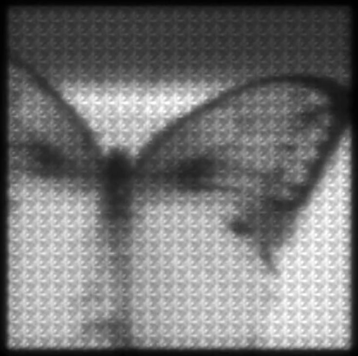
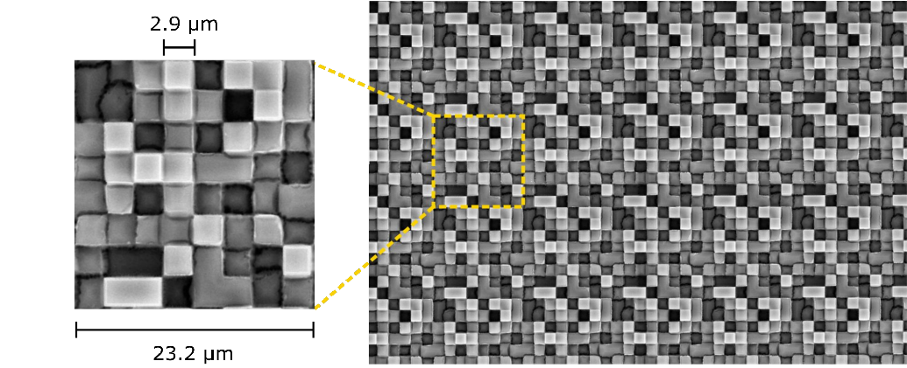

Hardware-Software Co-Design
Diffractive Optical Element + Computational Imaging
Lumos employs Computational Imaging. We shift the complexity from the hardware (optics) to the software (algorithms). By coupling a specialized diffractive element with rigorous inverse-problem solvers, we can recover high-fidelity spatial-spectral information using simple, robust hardware.
1. The Hardware Stack
The physical architecture is a “Drop-In” replacement for standard machine vision cameras. It consists of three layers, designed for modularity and scalability:
- Standard Lens: We utilize off-the-shelf refractive optics (C-Mount). The system is compatible with a wide range of focal lengths.
- The DFA (Diffractive Filter Array): This is the core IP. It is a nanofabricated, transparent, phase-modulating optical element.
- Standard Sensor: The system works with off-the-shelf monochrome sensors.
- Visible/NIR: Standard CMOS sensors (e.g., Sony IMX series).
- SWIR: InGaAs sensors.

The Diffractive Filter Array (DFA)
The DFA is fundamentally different from the Bayer filters found in consumer cameras.
- Phase Modulation: Bayer filters work by Amplitude Modulation (absorption)—they block photons that don’t match the color filter. This wastes ~66% of the light. The Lumos DFA works by Phase Modulation—it delays the light to create diffraction patterns. It is transparent and transmits \(\ge 90\%\) of the incident photons.
- Fabrication: The DFA is a surface-relief microstructure fabricated using Nano-Imprint Lithography (NIL). This is a wafer-level process, allowing thousands of optics to be stamped simultaneously, similar to semiconductor manufacturing.
- Integration: The DFA is bonded in close proximity (\(\sim 50\mu m\)) to the sensor pixels. This specific gap distance is optimized to balance spatial resolution with spectral dispersion.
2. The Physics of Encoding (The Diffractogram)
When light from the scene passes through the DFA, it is diffracted. The angle at which light bends is strictly determined by its wavelength. Blue light bends at a shallow angle; Red light bends at a steep angle.
Instead of forming a direct “sharp” image, the system forms a Diffractogram. This is a 12-bit grayscale image where spectral information is encoded into local spatial interference patterns.
Visual Appearance: To the human eye, a Diffractogram looks like a slightly blurry or textured grayscale image.

Example: A raw diffractogram of a butterfly. While it looks like a standard grayscale image, it contains hidden spectral information encoded in the local texture. Information Content: The “blur” is actually a deterministic structure. A point source of green light creates a specific point-spread function (PSF) pattern. A point source of red light creates a different, wider pattern. By analyzing these local patterns, algorithms can mathematically disentangle the colors.
Advantages of the Diffractogram
- Data Efficiency: The Diffractogram is a single 2D array. It is significantly smaller (10x-100x) than the 3D data cube it represents.
- Snapshot Acquisition: Because the encoding happens optically and instantaneously, the system captures the full spatial-spectral volume in a single integration period.
Data Explosion Calculator
See how quickly hyperspectral data scales compared to Lumos.
| Format | Bands | Bit Depth | Relative Size | Single Frame | Video Stream |
|---|
Video Demonstration: Encoding in Motion
The following video illustrates the encoding process for a dynamic scene (a butterfly).
Note on Frame Sizes & Data Volume:
- Hyperspectral (Top Right): The full 3D spectral cube is massive. In the video, you see the “unfolded” bands. Storing or transmitting this raw stream requires gigabits per second.
- RGB (Top Left): The standard color image we are used to. Low bandwidth, but low spectral information.
- Diffractogram (Bottom): This is the actual raw data captured by the Lumos sensor.
- Resolution: It is a single monochrome frame, identical in pixel count to a standard b/w camera.
- Information Density: Despite being just one frame (like the RGB or smaller), it encodes the entire spectral complexity of the scene shown in the Hyperspectral view.
- Compression: This illustrates the massive optical compression: we capture the complexity of the top-right video using the data budget of the bottom video.
3. Calibration
To decode the Diffractogram, we must perfectly characterize the optical system. We perform a one-time Point Spread Function (PSF) Calibration.
We measure the system’s response to point sources at various wavelengths and spatial positions. This builds the Forward Model—a rigorous mathematical description of exactly how the optics transform a spectral scene into a Diffractogram. This calibration step allows us to treat the camera not just as an imager, but as a precise linear measurement operator.
4. System Comparison
We position Lumos not merely as a cost-reduction play, but as a fundamentally different architectural approach to spectral acquisition suited for modern data pipelines.
| Feature | Traditional HSI (Push-broom) | Snapshot Mosaic (Fabry-Pérot) | Lumos Imaging (Diffractive) |
|---|---|---|---|
| Acquisition Mode | Line-Scan (Requires precise motion) | Snapshot | Snapshot |
| Optical Efficiency | Low (Slit-limited) | Low (Resonant/Absorptive) | High (Transparent Phase Mask) |
| Angle Sensitivity | Low | High (Blue shift at edges) | Low (Wide FOV compatible) |
| Fabrication | Precision Assembly | Multi-layer Deposition | Single-Step Lithography |
| Data Format | Raw Data Cube (Heavy) | Raw Data Cube (Heavy) | Encoded Diffractogram (Light) |
| Spectral Bands | Fixed by Hardware | Fixed by Hardware | Software-Defined (Post-Capture) |
5. Manufacturing & Scalability
A key differentiator of the Lumos approach is the fabrication method. Traditional spectral cameras require the assembly of discrete optical components (prisms, gratings, lenses) with tight mechanical tolerances. This manual assembly limits scalability.
Lumos utilizes Nano-Imprint Lithography (NIL) to fabricate the Diffractive Filter Arrays (DFA).
- Wafer-Level Optics: The DFAs are manufactured on standard 8-inch or 12-inch wafers. Thousands of optics are created in a single process step.
- Robustness: The diffractive features are surface-relief structures on the order of micrometers. This scale makes them robust to minor fabrication errors, unlike metasurfaces which require nanometer-precision and are extremely sensitive to fabrication variance.
- Cost Structure: This process allows the optics to be produced at volumes and costs comparable to standard consumer electronics components, enabling a path to ubiquity.
